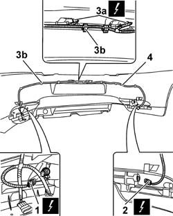

5505C82 WIRING incorporated in REAR BUMPER RR
- Path
- Procedures > 55 ELECTRICAL EQUIPMENT > 5505 INSTRUMENT/GUAGE ELECTRICAL WIRING > 5505C VEHICLE COMPARTMENT WIRING > 5505C82 WIRING incorporated in REAR BUMPER RR
- Kind
- repair procedure (removal / refitting; the operation number is the code)
- Applies to
- all engines; all production periods
- Interactive page
- https://sloeber94.github.io/elrnDB-aGt/en/#/125001602
Applies to: all engines; all production periods
 Removing
Removing
 Refitting
RefittingOp. 4450B06 LEFT REAR WHEEL R R
Op. 4450B08 RIGHT REAR WHEEL R R
Op. 7055B44 LEFT HAND REAR SUPPLEMENTARY WHEEL ARCH - R+R
Op. 7055B45 RIGHT HAND REAR SUPPLEMENTARY WHEEL ARCH - R+R
Op. 7040B10 LOAD PLATFORM (LUGGAGE PLATFORM) TRIM - R+R
Op. 7040B22 LUGGAGE COMPARTMENT/LOAD PLATFORM MOULDING - R+R
Op. 7050A22 REAR SEAT CUSHION - R+R
Op. 7050A14 SPLIT REAR SEAT ASSEMBLY - R+R
Op. 7040G30 BOOT LIGHT BULB HOLDER - R R
(right side)
Op. 7065C86 BOOT/LOAD PLATFORM POWER UNIT HOUSING - R R
(left side)
Op. 5570T85 CD/AUDIO PLAYER LOADER - R R
(left side)
Op. 7040B35 One luggage compartment COMPARTMENT left or right RR
1. Disconnect the reversing light electrical connection.
Name | Connector | |
|---|---|---|
1 | Reversing rear light | See F33 REVERSING REAR LIGHT |
2. Disconnect the rear fog lamp electrical connection.
Name | Connector | |
|---|---|---|
2 | Rear fog lamp | See F32 REAR FOG LAMP ( CONNECTORS ) |
3. Rotate the bulb holders (3a) for the number plate lights, then release the wiring from the retaining clips (3b).
4. Remove the wiring incorporated in the rear bumper.

Applies to: all engines; all production periods
Refitting
RemovingCheck that the wiring is not damaged.
Position the wiring and secure it to the rear bumper using the retaining clips.
Fit the bulb holders for the number plate lights.
Connect the rear fog lamp electrical connector.
Name | Connector | |
|---|---|---|
- | Rear fog lamp | See F32 REAR FOG LAMP ( CONNECTORS ) |
Connect the reversing light electrical connector.
Name | Connector | |
|---|---|---|
- | Reversing rear light | See F33 REVERSING REAR LIGHT |
Op. 7040B35 One luggage compartment COMPARTMENT left or right RR
Op. 5570T85 CD/AUDIO PLAYER LOADER - R R
(left side)
Op. 7065C86 BOOT/LOAD PLATFORM POWER UNIT HOUSING - R R
(left side)
Op. 7040G30 BOOT LIGHT BULB HOLDER - R R
(right side)
Op. 7050A14 SPLIT REAR SEAT ASSEMBLY - R+R
Op. 7050A22 REAR SEAT CUSHION - R+R
Op. 7040B22 LUGGAGE COMPARTMENT/LOAD PLATFORM MOULDING - R+R
Op. 7040B10 LOAD PLATFORM (LUGGAGE PLATFORM) TRIM - R+R
Op. 7055B44 LEFT HAND REAR SUPPLEMENTARY WHEEL ARCH - R+R
Op. 7055B45 RIGHT HAND REAR SUPPLEMENTARY WHEEL ARCH - R+R
Topics linked from this page (14)
- 4450B06 LEFT REAR WHEEL R R
- 4450B08 RIGHT REAR WHEEL R R
- 5570T85 CD/AUDIO PLAYER LOADER - R R
- 7040B10 LOAD PLATFORM (LUGGAGE PLATFORM) TRIM - R+R
- 7040B22 LUGGAGE COMPARTMENT/LOAD PLATFORM MOULDING - R+R
- 7040B35 One luggage compartment COMPARTMENT left or right RR
- 7040G30 BOOT LIGHT BULB HOLDER - R R
- 7040H80 PARCEL RACK
- 7050A14 SPLIT REAR SEAT ASSEMBLY - R+R
- 7050A22 REAR SEAT CUSHION - R+R
- 7055B44 LEFT HAND REAR SUPPLEMENTARY WHEEL ARCH - R+R
- 7055B45 RIGHT HAND REAR SUPPLEMENTARY WHEEL ARCH - R+R
- 7065C86 BOOT/LOAD PLATFORM POWER UNIT HOUSING - R R
- 7210E66 REAR BUMPER